Flygande valen
Nu ska du få göra en version av spelet Skywhale där en narval flyger omkring och äter munkar för att få extra energi och samlar andra objekt för att flyga högre och högre. Här är det en flygande val som åker runt på himlen och ska äta så många munkar som möjligt. Varje munk ger poäng! Du kommer att lära dig att använda variabler och slumptal.
Här kan du se ett exempel här: https://scratch.mit.edu/projects/104732551/
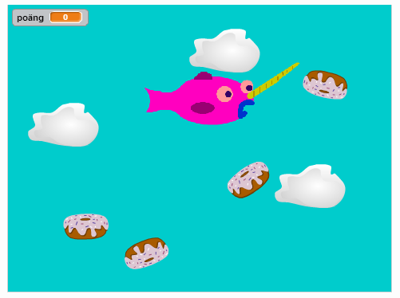
1: En val som följer muspekaren
När du startar ett nytt projekt visas en katt som enda sprajt på vit bakgrund. Ta bort katten och rita en egen sprajt som ska vara spelets huvudkaraktär, den flygande valen. Den ska kunna styras med hjälp av muspekaren.
Tryck på saxen (högt uppe i mitten) och sedan på katten så försvinner den.

Välj "Rita ny sprajt” (penseln). Här får du själv prova dig fram och rita din egen val. Om du hellre vill använda en färdig sprajt, gå till biblioteket genom att trycka på knappen för ”Välj sprajt från bibliotek”.
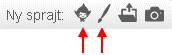
För att spelet ska bli enklare att spela måste du minska storleken på valen. Tryck på förminskningsknappen och sedan på sprajten tills den är lagom stor.

Tryck på SKRIPT-fliken. Dra ut ett block för HÄNDELSER: "när START (flaggan) klickas på” till skriptytan. Under den fäster du blocket ”för alltid” som finns under rubriken KONTROLL. Det här är en LOOP som gör att sprajten fortsätter röra sig så länge programmet är igång.
Inuti loopen lägger du ett block från RÖRELSE som säger "peka mot muspekare” och efter det ”gå 10 steg”. Prova dig fram med ett värde som du tycker ger lagom hastighet!
För att valen alltid ska starta ifrån samma ställe på scenen, behöver du sätta en startposition. Sätt valen där du vill ha den på scenen. Välj från RÖRELSE "gå till x: y:” och koppla fast direkt under flaggan, innan loopen. De värden som står automatiskt efter X och Y är KOORDINATER för den plats där du har satt valen.
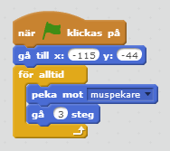
Tips: För att valen inte ska vända sig upp och ned i spelet, gå in på sprajtens informationsruta och välj att den bara kan vända sig åt höger-vänster.
Testa ditt projekt! Klicka på START. Kan du styra valen med muspekaren? Går den lagom snabbt?
Vad händer om du inte rör muspekaren och valen hinner ikapp den? Hur ser det ut? Varför händer det, tror du?
Du kan förhindra att valen flippar omkring som en galning genom att lägga till blocket "om <> då” som finns under KONTROLL. Lägg blocket inuti loopen så att den omsluter dina rörelse-skript.
Nu ska du välja block från OPERATORER och KÄNNA AV för att tala om för sprajten att:
Om avståndet till muspekare är större än 10
Då ska sprajten peka mot muspekaren och gå
Är avståndet mindre än 10 står sprajten bara stilla.
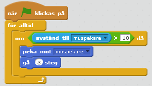
Testa ditt projekt! Klicka på START. Fungerar det bättre att styra valen nu?
2: En himmel som bakgrund
Du ska nu få rita en bakgrund till spelet. Här i exemplet är det en blå himmel, men du får hitta på som du vill. Du behöver inte rita moln på himlen, för det lägger du till som sprajter. Då kan du välja att programmera dem senare i en av våra utmaningar!
För att ändra bakgrunden trycker du först på SCEN längst till vänster och sedan på fliken BAKGRUNDER högst upp i mitten.
 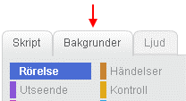
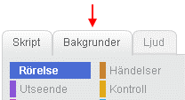
Tryck på FYLL MED FÄRG (målarburken). Välj en färg som passar till din himmel och tryck på den vita bakgrunden, då fylls den med den valda färgen.
Moln gör du som sprajtar. Rita egna med "Rita ny sprajt” eller gå till biblioteket med ”Välj sprajt från bibliotek”. Under ”Saker” hittar du ett moln, ”Cloud”. Gör sprajten lagom stor och placera på scenen. Kopiera för flera moln!
3: Munkar att äta
I spelet ska valen äta munkar som rör sig över himlen. Du ska nu få skapa dessa sprajtar och få dem att röra sig slumpmässigt. Om du inte vill rita själv finns det färdiga i Scratch-biblioteket. Du gör en sprajt som du kopierar efter att skriptet är klart.
Rita en egen munk med "Rita ny sprajt” eller gå till biblioteket med ”Välj sprajt från bibliotek”. Under ”Saker” hittar du en munk, ”Donut”. Gör sprajten lagom stor och placera på scenen. Vänta med att kopiera sprajten till efter att du har programmerat den!
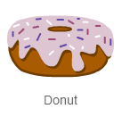
Tryck på SKRIPT-fliken. Dra ut blocket för HÄNDELSER: "när START (flaggan) klickas på” till skriptytan. Under den fäster du blocket ”för alltid” från KONTROLL.
Inuti loopen fäster du block från RÖRELSE som säger att sprajten ska:
För alltid
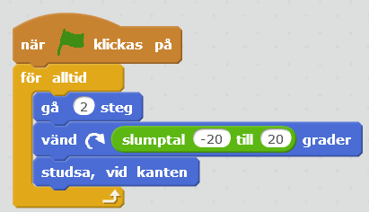
Tips: Blocket för "slumptal” hittar du under OPERATORER. Du lägger in blocket inuti rutan för värdet på ”vänd”. Skriv in de värden som du vill att skriptet ska slumpa mellan. Prova dig fram vilka värden som blir bra, minusvärde ger vänster och plusvärde är höger!
Testa ditt projekt! Klicka på START. Flyger munken runt på himlen?
Pröva att byta ut värdena för "slumptal” och ”gå”-blocken. Rör sig munken annorlunda? Vad gör "studsa om vid kanten”-blocket? Pröva att ta bort det blocket och se vad som händer!
Nu ska du få valen att äta munken. När valen når en munk ska den försvinna för att komma tillbaka en stund senare, så att munkarna inte tar slut!
Dra ut blocket "om <> då: annars” som finns under KONTROLL och lägg det inuti munkens ”för alltid”-loop, efter rörelserna. Nu ska skriptet KÄNNA AV om munken ”rör sprajten” som är valen.
Om den gör det, då ska sprajten:
Gömma sig
Vänta 3 sekunder
Visa sig igen
Lägg till ett block för "visa” även direkt under ”när START klickas på”. Annars kan det bli fel när du startar spelet!
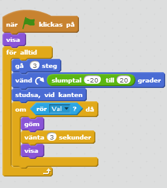
Testa ditt projekt! Klicka på START. Försvinner munken när den nuddar vid valen? Spelar det någon roll vilken del av valen som rör vid munken?
Munken försvinner oavsett vart på valen den nuddar. Men den borde egentligen bara försvinna om den nuddar valens mun eftersom den blir uppäten. Dessutom kan valen nu vänta på stället och äta upp munken igen när den dyker upp, vilket inte är så rättvist!
Hur kan du se till att munken bara försvinner om den nuddar valens mun? Du kan byta ut blocket "rör sprajten” mot ”rör färgen” och se till så att din val har en speciell färg på sin mun.
Tips: När du har ritat munnen kan du i skriptet för "rör färgen” välja färg genom att klicka i färgrutan och därefter på valens mun!
Sedan kan du få munken att gå till en slumpvis punkt på scenen innan den visas igen. För det behöver du lägga till ett "gå till x: y:” och välja ”slumptal” som koordinater! Dra runt med munken på scenen för att se vilka värden som hela scenen har.
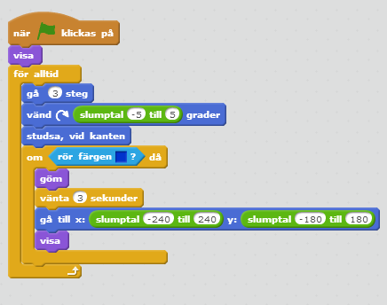
Testa ditt projekt! Klicka på START. Försvinner munken bara om den nuddar valens mun? Dyker den upp igen på en slumpvis plats på scenen istället för där den försvann?
- Nu kan du kopiera sprajten så att du får så många munkar som du vill ha på himlen!
Om du vill att munkarna ska bli unika kan du:
Tips: Om du vill kan du lägga till en ljudeffekt när valen äter munken! Lägg in ett block för "spela ljudet” i det skript du nyss gjort.
4: Poäng för att äta munkar!
Det räcker inte med att bara äta munkar. Du ska kunna samla poäng också! För varje munk som valen äter ska spelet lägga till 1 poäng, och du vill kunna se hur många poäng du har fått.
För att räkna poäng behöver du skapa en VARIABEL. Det kan liknas vid en låda där du lägger in saker. I variabeln lägger du ett värde, t ex en siffra, som kan öka eller minska. På samma sätt kan du ta ur eller lägga i fler saker i en låda. Låter det konstigt? Snart får du se hur det fungerar.
Börja med att skapa ett skript som får munken att skicka ett meddelande när den blir uppäten. Fäst blocket "skicka ” från HÄNDELSER under ”rör färgen” och ändra till ett nytt meddelande i rullistan. Döp meddelandet till ”poäng”. Gör likadant för alla dina munkar!
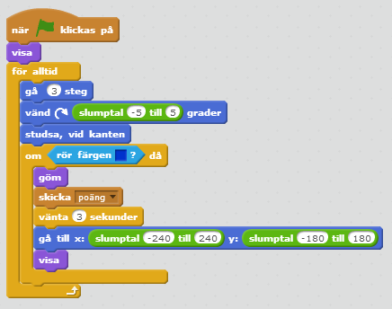
Markera nu SCEN och gör ett skript för den som tar emot meddelandet. Här vill du tala om för scenen att den ska räkna poäng. För det behöver du skapa en variabel från DATA som du döper till "poäng”. Fäst blocket ”ändra poäng med 1” efter ”tar emot meddelandet”.
Välj att variabeln ska vara synlig och att den gäller för alla sprajtar. Placera poängräknaren där du vill ha den på scenen.
För att nollställa poängen vid start gör du ett till skript som säger att "när START (flaggan) klickas på” så ”sätt poäng till 0”.
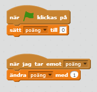
Testa ditt projekt! Klicka på START. Står poängräknaren på 0 när du startar spelet? Ändras poängen när valen äter munkar? Står poängräknaren på 0 när du startar spelet?
Nu har du ett färdigt spel!
Grattis, nu har du gjort färdigt uppgiften.
Döp ditt projekt i rutan högst upp till vänster.
Tryck på DELA högst upp till höger för att andra ska kunna hitta projektet på Scratch.
Gå ut till projektsidan och låt någon annan testa ditt spel.
Utmaningar
Nu är det fritt fram för dig att hitta på helt egna funktioner till ditt spel – eller fortsätta med någon av våra utmaningar:
Tidsgräns för spelet
Minuspoäng för moln
Flera banor
Tidsgräns för spelet
Om du vill att spelet ska vara på tid kan du göra ett skript som avslutar spelet efter ett visst antal sekunder. Hur många munkar hinner valen äta på 30 sekunder?
För det behöver du först skapa en ny VARIABEL som du döper till "tid” och som gäller för alla sprajtar. Sedan gör du ett skript för SCEN som talar om att:
- Om tid = 0, då stoppa alla skript så att spelet avslutas
Minuspoäng för moln
I spelet SkyWhale ska valen undvika vissa flygande objekt, som bläckfiskar och hårtorkar. Kan du skapa ett skript för att minska poäng, "ändra poäng med -1”, om valen flyger på ett moln?
Flera banor
I spelet SkyWhale kan valen även flyga ut i rymden och ner till en undervattensvärld. Kan du göra ett skript som byter scenens bakgrund när spelaren når en viss poäng – så att ditt spel består av flera banor? Rita flera bakgrundsbilder eller välj ur biblioteket under fliken BAKGRUNDER.
Frågeställningar